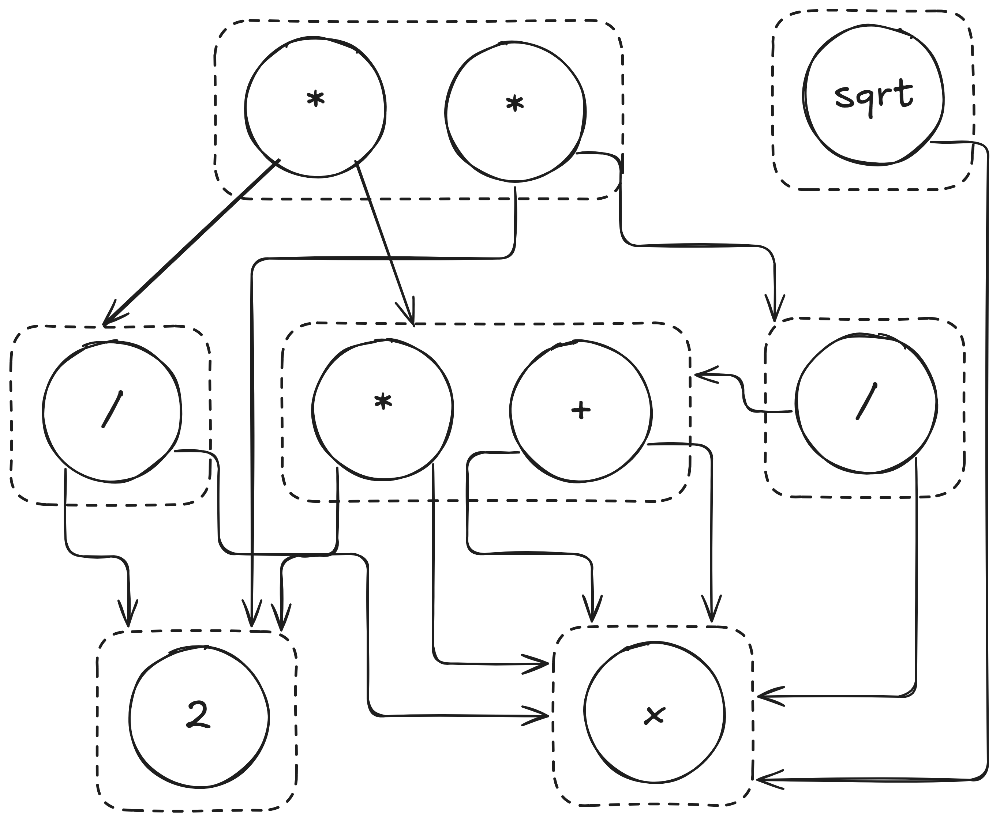
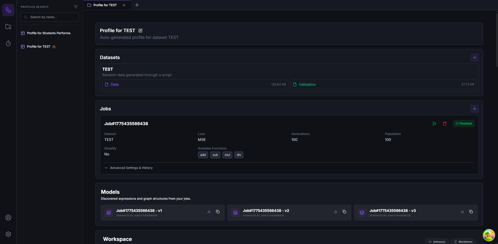
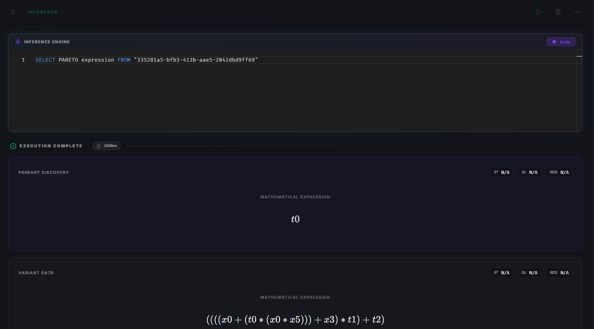
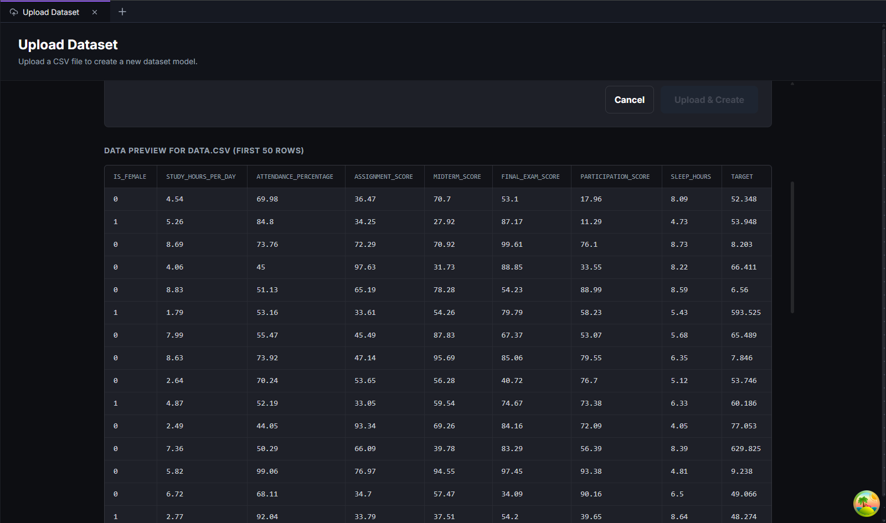
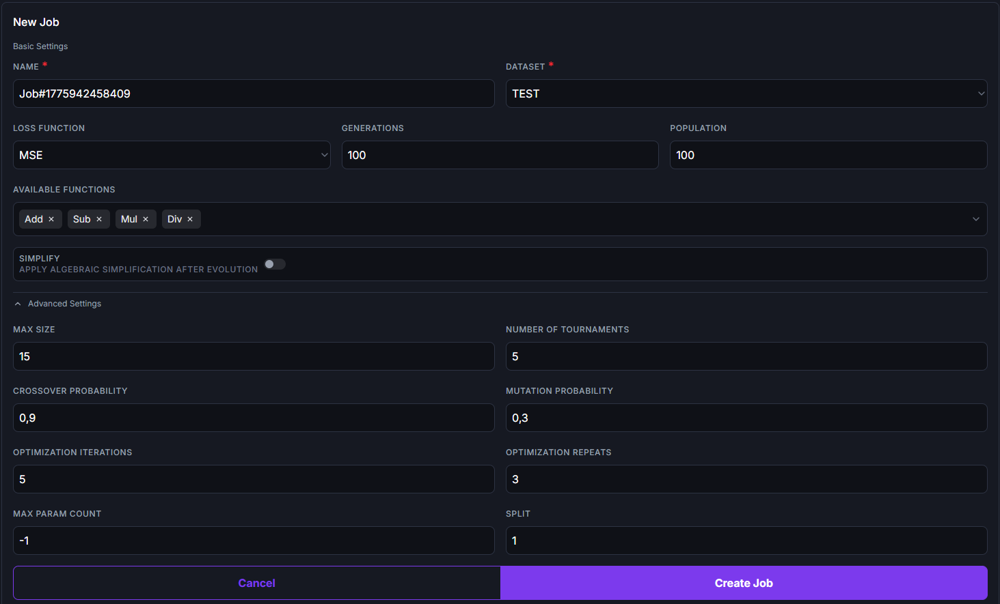
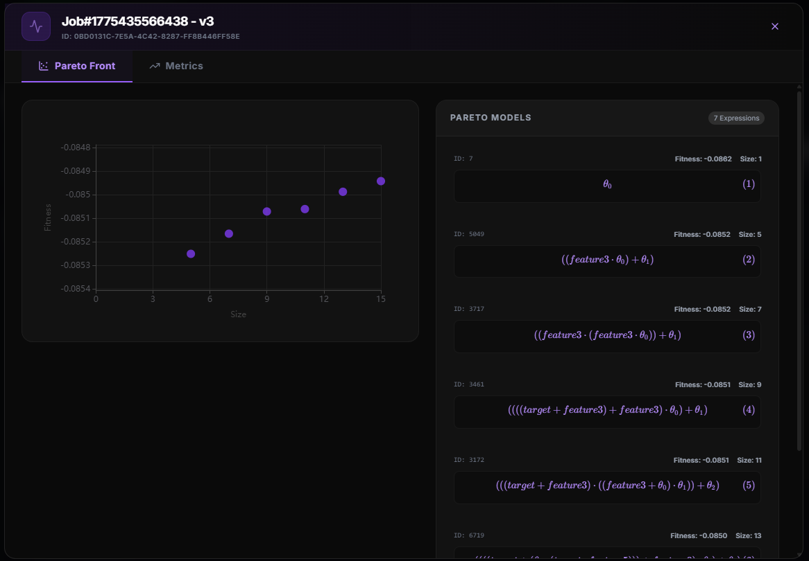
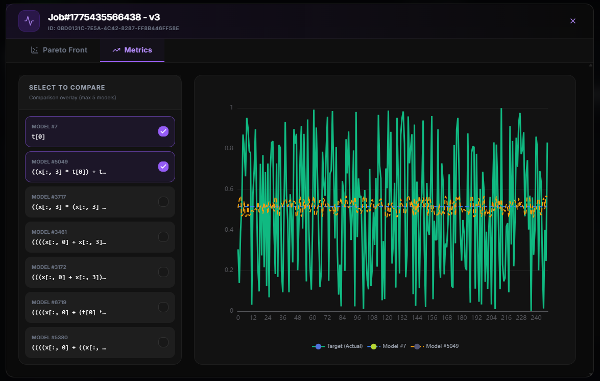

Interface Web para
Regressão Simbólica
Autor: Gustavo Teodoro Bauke
Orientador: Prof. Dr. Fabrício Olivetti de França
Ano: 2026
O Paradigma da Caixa-Preta na IA
Modelos modernos (como Redes Neurais e LLMs) atingem alta precisão preditiva, mas carecem de interpretabilidade para validar leis da física ou explicar decisões críticas.
- Falta de Interpretabilidade: É extremamente difícil auditar o raciocínio interno ou justificar o porquê de uma previsão (Ex: diagnóstico médico).
- Barreira Científica: Nas ciências exatas, um modelo precisa ser transparente, e não apenas entregar "bons palpites" cegos.
A Regressão Simbólica (SR)
A Regressão Simbólica surge na área de IA evolutiva como a solução ideal para criar Modelos transparentes.
- Ao invés de apenas se ocupar em fazer predições, a SR busca evoluir e deduzir a equação matemática explícita \(f(x)\) por trás dos dados.
- Realiza uma busca livre e simultânea pela estrutura da equação matemática e pelos seus respectivos parâmetros numéricos, superando as limitações para a ciência das regressões polinomiais engessadas.
- Com a fórmula exposta em árvores (ASTs), os especialistas humanos podem analisar o resultado e corrigir falhas no modelo.
O Fluxo do Algoritmo Genético
O Preço da Interpretabilidade
Apesar de seus imensos benefícios, a Regressão Simbólica ainda não domina o mercado devido ao seu altíssimo custo computacional de treinamento:
Explosão Combinatória
O elevado número de expressões sintáticas geradas pelos operadores de mutação cresce de forma exponencial a cada geração evolutiva.
Redundância Computacional
O modelo acaba processando infinitas fórmulas com aparências diferentes, mas que matematicamente dizem a mesma coisa (ex: \(x + x\) e \(2 \cdot x\)).
Gargalo de Hardware
O custo repetitivo de calcular a aptidão esgota rapidamente a viabilidade de execução em recursos computacionais limitados.
Grafos de Igualdade (E-graphs)
Estruturas de dados matemáticas capazes de armazenar e compactar múltiplas expressões equivalentes de forma altamente eficiente.
Fundamentos da Saturação
- Classes de Equivalência (e-classes): Conjuntos de expressões logicamente equivalentes são agrupados em nós compartilhados (e-nodes).
- Saturação de Igualdade: O processo de aplicar regras de reescrita contínuas para explorar e agrupar representações matemáticas.
Treinamento Integrado (eggp)
O eggp é o único algoritmo de regressão simbólica capaz de executar as operações de mutação e cruzamento genético de forma otimizada diretamente na estrutura dos grafos de igualdade, minimizando redundâncias estruturais e economizando drasticamente alocação de memória na busca.
Compressão Estrutural Massiva
Na prática, as regras algébricas do E-graph agrupam milhares de e-classes, criando uma teia altamente densa capaz de representar infinitas equações.

Raio-x topológico de um E-graph após rodar o treinamento.
A Dinâmica Interativa dos E-graphs
Barreiras das Ferramentas Atuais
Softwares atuais de SR (como TuringBot e HeuristicLab) ainda sofrem com problemas cruciais:
- Peso Local: Forçam que o computador do usuário (com CPU e bateria normais) sustente sozinho toda a carga computacional do cálculo da evolução.
- Analista Passivo: Essas ferramentas geralmente retornam um conjunto restrito de alternativas. Isso priva o analista de navegar ativamente pelo E-graph para garimpar e consultar expressões por meio de regras personalizadas.
A Solução: Plataforma Spectrum
- Criamos uma ferramenta nativa Web e em Nuvem dedicada a resolver todos os problemas de usabilidade da pesquisa em Regressão Simbólica.
- O processamento massivo ocorre invisível na nuvem, poupando a máquina do usuário final de travamentos.
- Centraliza 100% da operação num ambiente amigável: do momento de subir a tabela de dados até a geração do relatório visual conclusivo.

Domain-Driven Design (A Arquitetura)
A arquitetura do sistema segue os princípios do Domain-Driven Design (DDD), garantindo o isolamento da regra de negócio. Os principais domínios são:
- Authentication: Regras de login e segurança de credenciais para os pesquisadores.
- Workspace: Gestão e isolamento das pastas, tabelas de dados brutos e rascunhos individuais de cada usuário.
- Training: Coordena o envio das execuções de Inteligência Artificial para as filas na nuvem garantindo não travar a Web.
- Inference: O módulo que analisa o grafo já processado e exibe em tabelas os melhores resultados matemáticos garimpados.
Entidades Principais (1/2)
Todo o fluxo de uso roda em cima de entidades centrais claras mapeadas dentro do banco de dados do sistema:
- User: A identidade central do pesquisador, responsável pela autenticação e controle de acesso.
- Dataset: Abstração lógica que armazena os metadados e as referências diretas aos arquivos CSV experimentais.
- Profile: Espaço de trabalho personalizado no editor que organiza os datasets importados, modelos gerados e blocos modulares.
Entidades Principais (2/2)
Continuação das entidades encarregadas pelo processamento lógico distribuído na nuvem:
- Job: Configuração que encapsula e armazena os meta-parâmetros do algoritmo genético estipulados para a execução do treinamento.
- Model (E-graph Dump): Abstração do modelo persistido gerado após o término de um Job. Contém referências para a visualização da Fronteira de Pareto.
A Linguagem IQL (Inference Query Language)
A Inference Query Language (IQL) é uma linguagem declarativa desenvolvida para a prospecção ativa de resultados.
Com sintaxe estrutural análoga à linguagem SQL, a IQL foi proposta para realizar buscas e filtragens condicionais sobre os e-graphs gerados durante o treinamento.
- Possibilita consultas diretas baseadas no limite de erro numérico e tamanho final das árvores.
- Atua em conjunto à biblioteca rEGGression para casamentos de padrões simbólicos.
- Permite extrair a expressão ótima adequada sem depender da resposta isolada arbitrária de uma ferramenta fechada.
A Sintaxe da Exploração Ativa
A IQL permite que o pesquisador crie regras de filtragem para formular buscas estruturadas e detalhadas:
SELECT TOP 5 expression, fitness, size
FROM egraph_gravitacional
WHERE size <= 15 AND fitness < 0.05
PATTERN IS LIKE sin(v0) * v1;- Filtragem Estrutural (Pattern): A diretiva `PATTERN` permite a extração condicional de expressões limitando-as rigorosamente pela correspondência morfológica.
- Avaliação Contínua: Comunicação Server Side Events (SSE) renderiza a extração parcial das equações conforme o servidor as obtém.
O Pipeline de Execução da IQL
A execução das consultas IQL roda em um interpretador e compilador próprio (Parser) construído do zero na plataforma:
- Análise Léxica (Tokenização): Converte a consulta textual em tokens validando a sintaxe e a semântica de forma robusta.
- Análise Sintática (Pratt Parser): Transforma os tokens em uma Árvore de Sintaxe Abstrata (AST) representativa da própria consulta do usuário.
- Integração Nativa: O motor executa a AST compilada diretamente contra o e-graph carregado em memória, garantindo altíssimo desempenho na extração massiva.
Casamento de Padrões (Pattern Matching)
- O verdadeiro poder da IQL reside na sua integração com algoritmos de Pattern Matching aplicados em grafos.
- A diretiva
PATTERN IS LIKEinstrui o motor a varrer o e-graph procurando equações que respeitem um esqueleto matemático específico (ex:sin(v0) * v1). - Garante que as expressões extraídas façam total sentido para as regras de negócio ou físicas do especialista, injetando conhecimento humano na filtragem.
"A capacidade de filtrar expressões que respeitem características estruturais pré-estabelecidas torna o processo alinhado aos conhecimentos prévios do especialista de domínio."
Exploração e Filtros Avançados
- A sintaxe da IQL foi desenhada para expandir o potencial de filtragem além da simples morfologia da equação.
- É possível definir limiares complexos combinando os metadados agregados aos E-nodes, avaliando instantaneamente as alternativas de sub-expressões que habitam a estrutura.
Interface de Perfis e Blocos Modulares
- O ambiente de trabalho unifica a extração analítica através da organização da visualização em blocos modulares.
- Blocos IQL: Componentes executáveis que acolhem as consultas estruturadas pelo pesquisador.
- Blocos Markdown: Área textual baseada na linguagem Markdown, utilizada para formatar redações e relatar a justificativa científica das expressões obtidas.

Funcionalidades: Gestão de Datasets
- Espaços de Trabalho Limpos: Todo projeto novo começa num Workspace segregado, mantendo a tela organizada.
- Pipeline de Dados Integrado: A abstração permite conduzir o envio dos dados, verificação morfológica e inicialização preditiva.
- Garantia Pré-Treino: O sistema abre uma visão da tabela final carregada, deixando o pesquisador conferir visualmente se os dados batem.

Funcionalidades: Submissão de Jobs
A criação de modelos de regressão é plenamente configurável por meio da interface gráfica.
- Configuração de Parâmetros: Área dedicada à definição das variáveis estipuladas ao treinamento.
- Execução Distribuída: A carga computacional é despachada por meio de um broker de filas, garantindo execução isolada em Workers, liberando a interface.

Funcionalidades: Avaliação Multiobjetivo
A Avaliação Multiobjetivo auxilia a seleção do modelo, viabilizando o balanço de métricas conflitantes.
- Fronteira de Pareto: O módulo plota um gráfico em duas dimensões explicitando as equações com base na Precisão vs Complexidade.
- Seleção Intuitiva: Permite ao usuário interagir visualmente com a distribuição populacional, facilitando a escolha da expressão.

Análise Comparativa de Modelos
- Além da Fronteira de Pareto, o ambiente gráfico fornece painéis detalhados de validação lado a lado.
- O pesquisador ganha o poder de cruzar métricas de teste adicionais, validando a robustez dos modelos candidatos antes da sua exportação oficial, tudo no próprio navegador.

Comparação Analítica de Plataformas
Comparação de funcionalidades essenciais para pesquisa em Regressão Simbólica.
| Funcionalidade | HeuristicLab | TuringBot | Spectrum |
|---|---|---|---|
| Interface Gráfica | Sim | Sim | Sim |
| Exibição da Fronteira de Pareto e Métricas | Sim | Sim | Sim |
| Acessibilidade Web | Não | Não | Sim |
| Treinamento Remoto e Assíncrono | Parcial | Não | Sim |
| Pipelines de Dados Integrados | Não | Não | Sim |
| Suporte a Consultas Declarativas de Padrões (IQL) | Não | Não | Sim |
| Ambiente de Documentação Integrado | Não | Não | Sim |
| Uso da estrutura de Grafos de Igualdade | Não | Não | Sim |
Conclusão
- A arquitetura distribuída do Spectrum provou que a transição de cargas pesadas para uma execução via filas destrava o treinamento exaustivo sem consumir o maquinário local do analista.
- A linguagem estruturada IQL quebra o modelo de observação estática de outras ferramentas, permitindo ao cientista a prospecção e extração guiada de regras específicas imersas nos e-graphs.
- Centralizar as visualizações otimizadas acopladas ao redator acadêmico agilizou com eficiência os fluxos metodológicos.
Trabalhos Futuros
- Resiliência de Rede: Implantar o padrão arquitetural estrito no código do backend para garantir que nenhum processo se perca.
- Suporte Estendido: Possibilitar a integração opcional da camada de treinamento para interligar as execuções IQL aos motores otimizados em C++ (ex. PySR).
- Tipagens Textuais Avançadas: Expandir o processador de dados para abranger e validar representações em texto, provindas da computação através de embeddings numéricos.